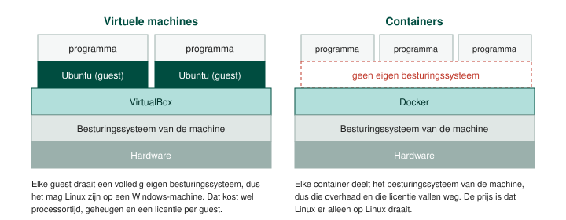

Een virtuele machine is een programma dat de werking van een echte computer nabootst. De processor, het werkgeheugen, de harde schijf, de netwerkkaart en de USB-poorten worden in software nagemaakt, en een besturingssysteem dat je erop installeert gedraagt zich net zoals op een fysieke computer.
Een server is een computer die een dienst levert aan andere machines of aan gebruikers in het netwerk: een bestandsserver, een webserver, een domeincontroller. Omdat er veel gebruikers tegelijk op zitten, zit er stevige hardware in, met een krachtige processor, veel werkgeheugen en snelle schijven. Dat maakt zo'n machine duur.
Daar komt bij dat een server meestal maar één taak krijgt. Zet je de bestandsserver en de domeincontroller op dezelfde machine, dan kan bij een defect niemand nog aanmelden én zijn de bestanden weg. Splits je ze over twee servers, dan blijft aanmelden werken terwijl je de bestandsserver herstelt. Elke taak een eigen machine geven is dus veiliger, en tegelijk een dure aangelegenheid.
Die dure machines staan bovendien het grootste deel van de tijd te wachten. De processor doet niets, het werkgeheugen is halfvol, en de capaciteit waarvoor betaald is, wordt niet gebruikt.
Bij virtualisatie draait er op één fysieke computer een besturingssysteem dat de baas is over de hardware, en daarbovenop draaien één of meer andere besturingssystemen die elk denken dat ze een eigen computer hebben.
De processor, het werkgeheugen en de schijfruimte van de host worden verdeeld over de host zelf en over elke guest die draait. Elke guest krijgt zijn eigen virtuele processor, zijn eigen virtuele werkgeheugen en zijn eigen virtuele harde schijf. Wat er in een guest gebeurt, heeft geen invloed op de host of op een andere guest: een guest die vastloopt of die je met een virus besmet, laat de rest ongemoeid.
Het belangrijkste voordeel is economisch. Door te virtualiseren laat je verschillende computersystemen op dezelfde hardware draaien, en bespaar je op aankoop, onderhoud, plaats in het rack en energie. Waar vroeger tien servers stonden die elk een tiende van hun capaciteit gebruikten, staat er nu één machine met tien virtuele servers erop.
Het tweede voordeel is de scheiding. Elk systeem zit in zijn eigen omgeving, dus je kan er iets in uitproberen zonder dat de rest er iets van merkt. Om die reden gebruik je in dit labo een virtuele machine om Linux te leren kennen: de Windows op je laptop blijft staan zoals hij stond.
Het nadeel is snelheid. Een virtuele machine deelt haar resources met de host en met de andere virtuele machines, en het hele besturingssysteem van de guest wordt mee gevirtualiseerd, wat zelf processortijd kost. Een virtuele machine is daardoor trager dan dezelfde hardware zonder virtualisatie. En als de fysieke processor, het geheugen of de schijf stukgaat, gaat elke virtuele machine op die host mee: de scheiding zit in de software, niet in de hardware.
Er komt ook een licentiekost bij kijken. Draai je tien virtuele machines met Windows, dan heb je tien Windows-licenties nodig.
| Programma | Van | Waar het draait |
|---|---|---|
| VirtualBox | Oracle | Op een gewone Windows-, Linux- of macOS-computer |
| VMware Workstation | Broadcom | Op een gewone Windows- of Linux-computer |
| Hyper-V | Microsoft | Ingebouwd in Windows Pro en in Windows Server |
| Proxmox VE | Proxmox | Rechtstreeks op de hardware van een server, zonder host eronder |
Een container schermt een programma af van de rest van de machine, net zoals een virtuele machine dat doet, maar met dit verschil: alle containers op een machine delen hetzelfde besturingssysteem. Dat besturingssysteem wordt dus niet telkens mee gevirtualiseerd, waardoor de overhead wegvalt en er ook geen extra licentie bij komt. Een container start in seconden en draait aan bijna de snelheid van de machine zelf.
De bekendste containersoftware is Docker. Je installeert het op Windows en op Linux, en op de website van Docker vind je kant-en-klare containers voor duizenden programma's.

Wat een container niet kan, is een ander besturingssysteem draaien dan dat van de machine waarop hij staat. Wil je Linux draaien op een Windows-machine, dan heb je een virtuele machine nodig, en dat is wat je in dit labo doet.